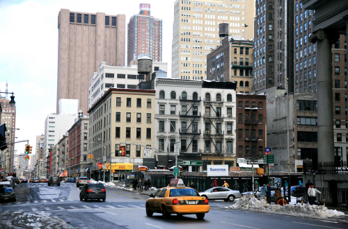

After obtaining a binary image using a filtering algorithm it is often necessary to remove noise from it using erosion and dilation operations. The erosion operation works as follows:
Click Prepare Source Canvas to load the image to be processed. Click Edge Detect to draw the detected edges. Click Move Destination to Source to make the output of the edge detector the input to the erosion/dilation operation. Click Dilate Source to dilate this binary image. Click Erode Source to erode this binary image.

|